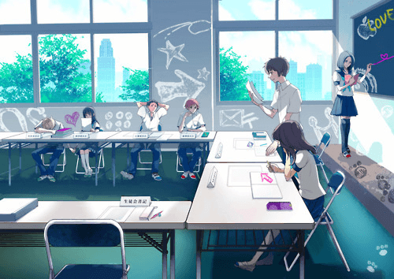

2014-10-10
“恍惚的时候，你会忽然听见一个女孩在对面宿舍的楼上唱歌，对面满是朦胧的雾气，醒来之后你会觉得心里是虚的，这时候你才可以知道自己的心里到底有多深。”就像《此间的少年》电影台词所描述的那样，校园时的我们，会因为对面宿舍唱歌的女孩失眠，会因为操场上打球的男孩欢呼，会因为她走过时飘起的裙摆驻足，也会因为他弹着吉他的旋律而心动。现在的交友软件太多太杂，却没有一款专门针对校园用户的交友应用，很多都往往依靠着艳遇、约炮、约会等方式来吸引社会用户，但是对于校园用户来说，这种形式是很难被公开的接受。小柚作为一款基于真实在校学生的交友应用，则将彻底改变这一现状。小柚以校园用户交友为核心诉求，通过构建心理模型并通过真实互助、匿名聊天和随机匹配等形式来满足学生用户的交友需求，相信在不久，校园里面就会掀起一股小柚风。

以互帮互助建立社交纽带，打造真实的社交需求
传统的社交产品，用户的社交需求更多是单向的，比如A因为B好看去寻求与B成为好友，而此时B其实并没有这个交友的需求，那么两者的交友成功率就会很低，即便成功也会特别浅层次。但是小柚是以帮助的形式来达成好友请求，比如找学长、修电脑、陪逛街、占座、一同自习等，当一方发出此请求的时候，另一方会根据自己的需求和能力去匹配这个请求，在此情况下，双方的社交关系就建立了，而且相对会更深层次，并且会给双方提供了一个从线上走下线下的机会